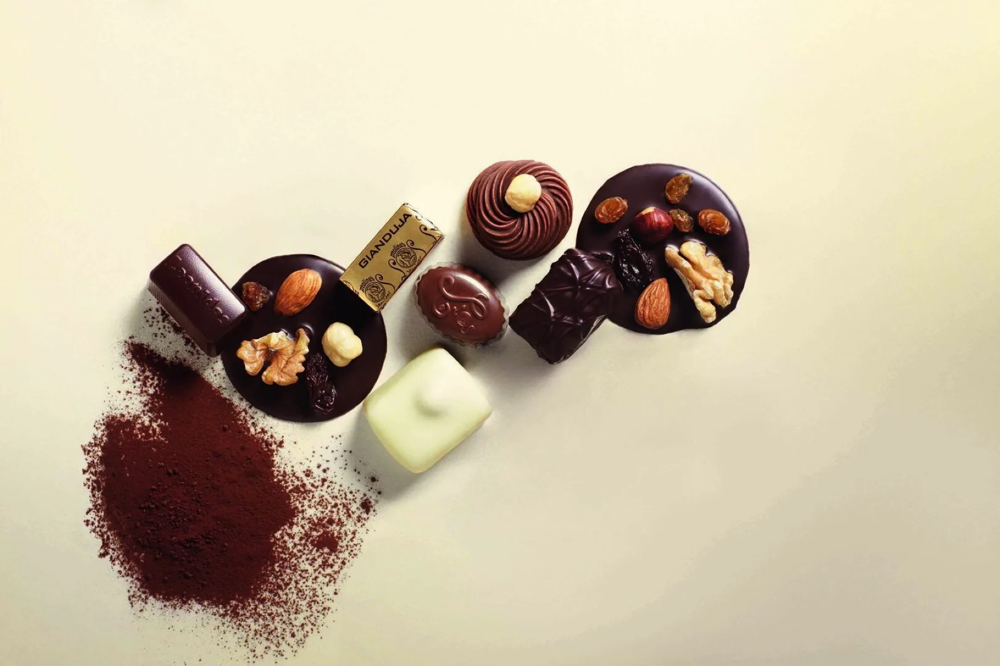

Belgosweet — Waver, sinds 1998
Wij weten wat er in het pakje moet.
Zevenentwintig jaar Belgische chocolade, koekjes en snoep — met het logo van iemand anders erop.
Zevenentwintig jaar lang dezelfde vraag: wat geef je een klant waar hij zich volgend jaar nog iets van herinnert?
- 27
- jaar in Waver
- 500+
- bedrijven bediend
- 16
- categorieën in de catalogus
- één
- vast aanspreekpunt per klant
Ons verhaal
Van één bestelwagen naar vijfhonderd bedrijven.
Belgosweet begon in 1998 als een tweemansbedrijf in Waver, met één bestelwagen en een handvol Belgische chocolatiers.
Wat toen doorverkoop was, is uitgegroeid tot een catalogus van meer dan honderdvijftig artikelen — van pralines tot adventskalenders, allemaal bestemd voor bedrijven die iets weggeven en willen dat het klopt.
Wat niet veranderde: elke aanvraag wordt door één persoon opgevolgd, van offerte tot levering. Dat is de reden dat klanten van het eerste uur er vandaag nog zijn.

1998 — vandaag
Wat we sindsdien deden
Opgericht in Waver
Twee mensen, één bestelwagen en een handvol Belgische chocolatiers.
Eerste vaste merkpartners
Leonidas, Jules Destrooper en Galler komen in het vaste assortiment.
Personalisatie met eigen logo
Van sleeve tot volledige doosbedrukking — het verschil met een sticker erover.
Samenwerking met Axedis
Verpakken en assembleren gebeurt sindsdien samen met een sociale inschakelingsonderneming.
Adventskalenders als specialiteit
De eindejaarsperiode groeit uit tot het drukste kwartaal van het jaar.
Meer dan 500 bedrijven
Zestien categorieën, zeven merken, en nog altijd één aanspreekpunt per klant.
Het team
Wie je aan de lijn krijgt
Elke aanvraag wordt door één persoon opgevolgd, van offerte tot levering. Dit zijn ze.

Contact
Eén adres, één nummer, één persoon.
- AdresBoulevard de l'Europe 123, 1300 Waver
- Telefoon+32 2 351 55 55
- E-mailinfo@belgosweet.be
- BereikbaarMa–vr 9:00–17:00
Stel je vraag
Geen offerte nodig maar wel een vraag? Dit formulier komt bij dezelfde persoon terecht.